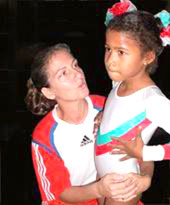

Orisel Martinez (CUB)
1983 Pan American Games AA Gold Medalist

Orisel and one of her young students.
Orisel was born in Ranchuelo, Cuba, and wanted to be like her older brother, Omar, who was learning gymnastics. Orisel enrolled in Jose Marti School in her hometown, advanced quickly and moved to Jorge Agostini Sports School in Cienfuegos, and by 1971 was studying at the national gym in Havana. One of Cuba's most successful female gymnasts, Orisel attained her best result at the 1983 Pan American Games in Caracas, Venezuela, where she won 2 gold and 3 silver medals.
In 1982, she married former gymnast Roberto Leon Richard, who competed at the 1976 Olympics. She retired in 1983, at age 24, to complete her degree in Physical Culture. In 1985 she gave birth to a daughter. She lives in Havana, where she works as a gymnastics coach and judge.
Competition
Results
1975
Pan American Games: 2nd Team, 4th B
1976
GDR-CUB Dual Meet: 2nd Team,
7th AA
1979
Pan American Games: 2nd Team, 10th AA
1980
Intl. Championships of Romania: 18th AA
Moscow News International: 10th AA
1981
Cottbus International: 13th AA,
4th V
University Games:
15th AA
World Championships: 14th Team, 68th AA (prelims)
1982
Blume Memorial: 10th AA
Coca-Cola International: 11th AA, 5th V
1983
Pan American Games: 2nd Team, 1st AA, 1st V, 2nd B, 2nd FX
World Championships: 18th Team
1984
Golden Sands International: 9th AA
This page was created on May 21,
2009.
© Gymn Forum